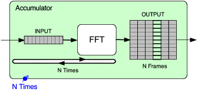

Next: Shredder, Previous: Fanout, Up: MarSystem composites [Contents][Index]
An Accumulator MarSystem accumulates result of multiple tick process calls to internal MarSystem. It then generates output only once when all the results are accumulated. It is used to change the rate of process requests.
For example, if the nTimes control for the Accumulator is set to 6, then each time the Accumulator receives a tick(), it sends 6 tick()s to the MarSystems that are inside it. This is shown graphically below:
One common use case for an Accumlator is if your algorithm needs to operate on a block of data, for example, it might need to analyze a number of frames of an FFT in order to detect a particular audio event.
An example of using an Accumulator could look like be:
MarSystem* net = mng.create("Series", "net");
MarSystem* acc = mng.create("Accumulator", "acc");
MarSystem* accuInternal = mng.create("Series", "accuInternal");
accuInternal->addMarSystem(mng.create("SoundFileSource", "src"));
accuInternal->addMarSystem(mng.create("Windowing", "ham"));
accuInternal->addMarSystem(mng.create("Spectrum", "spk"));
acc->addMarSystem(accuInternal);
//IMPORTANT NOTE:
//
//note that you can only add one Marsystem to an Accumulator
//any additional Systems added are simply ignored outputwise !!
//e.g. if you want to use multiple Marsystems in a row and accumulate
//their combined output, you need to put them in a series which you add
//to the accumulator
net->addMarSystem(acc);
net->updctrl("mrs_natural/inSamples", 512);
net->updctrl("Accumulator/acc/mrs_natural/nTimes", 10);
In the above example, a SoundFileSource is followed by a hamming Window, a Spectrum and a PowerSpectrum. All of these are added to an Accumulator, which is then added to a global Series. The nTimes control of the Accumulator is then set to 10.
The output of this MarSystem would be a realvec with 512 observations, corresponding to each of the bins of the FFT generated by the Spectrum, and with 10 columns (or samples). Your algorithm could then analyze this two-dimensional matrix to look for the audio feature you are investigating.
Next: Shredder, Previous: Fanout, Up: MarSystem composites [Contents][Index]